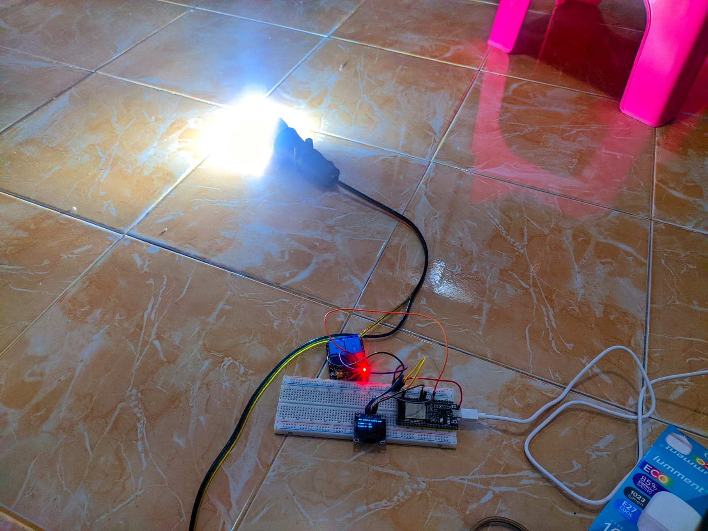

Smart Home adalah sistem rumah pintar yang memungkinkan pengguna untuk mengontrol lampu, pintu otomatis, alarm keamanan, serta perangkat elektronik lainnya menggunakan sensor dan mikrokontroler seperti Arduino atau ESP32.
| Komponen | Jumlah |
|---|---|
| Arduino Uno / ESP32 | 1 |
| Relay Module | 1–4 |
| LED / Lampu | 2–4 |
| Sensor PIR (Motion) | 1 |
| Sensor Ultrasonik (Pintu Otomatis) | 1 |
| Servo Motor | 1 |
| Kabel Jumper | Beberapa |
💡 Lampu menyala otomatis saat ada gerakan yang terdeteksi oleh sensor PIR.
🚪 Pintu otomatis terbuka menggunakan servo saat sensor ultrasonik mendeteksi jarak dekat.
🔔 Alarm aktif jika sistem mendeteksi aktivitas mencurigakan.
📱 Sistem ini dapat dikembangkan dengan kontrol IoT melalui Wi-Fi atau aplikasi Android.
Proyek Smart Home berhasil dibuat dan dapat bekerja secara otomatis untuk meningkatkan keamanan dan kenyamanan rumah. Proyek ini cocok untuk siswa tingkat menengah maupun lanjutan yang tertarik dengan IoT (Internet of Things) dan automasi.
← Kembali ke Website